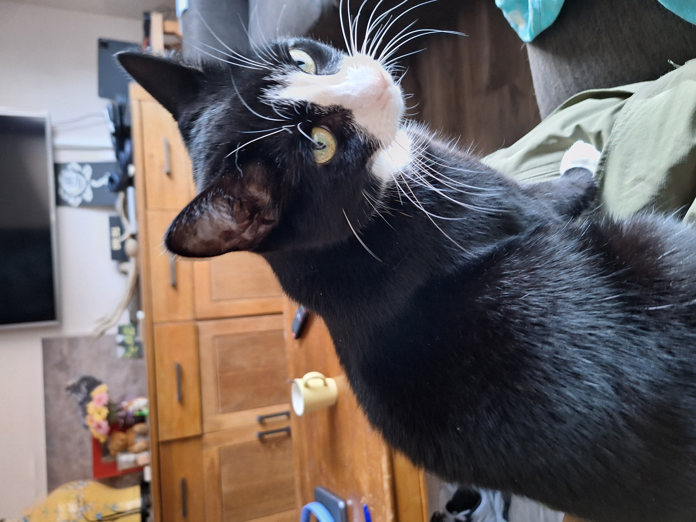
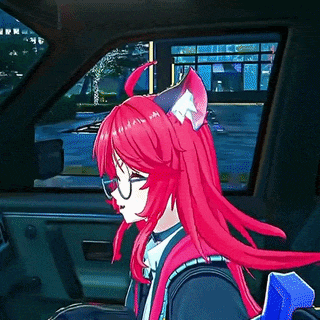

This website is in english. Sorry non english speakers.
Well i guess you couldnt really read this apology either...
Oh well.

Okay so basically. Cats are my favorite animals. And thats why i have 2 cats. But i dont have a picture of the other cat. But ill try to find a picture of the other cat. Shes named Rosie. Shes skye's sister. Theyre both 250 grams overweight. But we only call skye fat. Because she always asks for food.
I am Thijs. I am 16. I like to game 👍
I usually play undertale or deltarune
Im also learning how to code. Right now i can only make simple things with HTML and python.
When i was 7 i used scratch to make stuff. When i heard about python. i genuinely thought it was the snake. Like a snake writing code.
In the next part im gonna talk more about my cats.
So for more information go to this website:Learn more about cat care